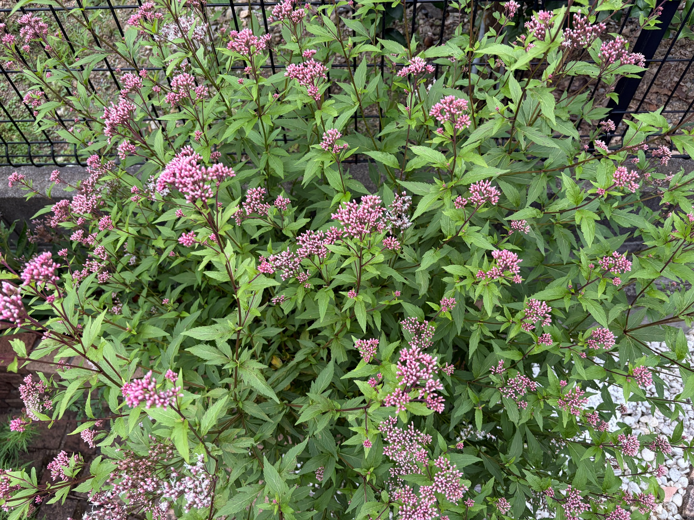
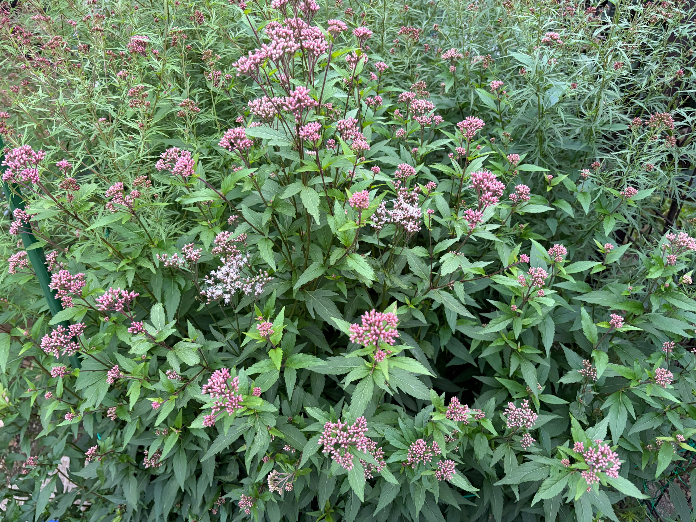

2026/10/04 多くの蕾と、白い糸状の花が広がる花房
10月4日のフジバカマ（原種系）は、枝分かれした茎の先にピンク色の花房が数多くついています。高く伸びた枝先だけでなく、株の中ほどや外側へ広がった枝にも大小の花房が見られ、緑の葉の間にピンク色が広く散らばっています。花房の数は多いものの、写真で見える範囲では、まだ開いていない蕾が目立つ状態です。
蕾は細長く、先端に丸みがあり、ひとつの花房の中に密に集まっています。濃いピンク色に見えるものから淡いピンク色のものまであり、花房によって色の濃さにも違いがあります。まだ白い糸状の部分がほとんど見えない花房は、蕾の輪郭がはっきりしており、全体が小さな粒の集まりのように見えます。
一方、一部の花房では開花が見られ、ピンク色の蕾の間から白い糸状の部分が伸びています。開いた部分では花房の輪郭がふんわりと広がり、蕾だけが密に集まった花房とは異なる表情になっています。ピンク色のまとまりの中に白色が重なり、開花している場所を見分けることができます。
1枚目の写真では、上部の左寄りや中央付近、下部の左寄りなどに、白い糸状の部分が見える花房があります。その周囲には、ピンク色の蕾がまとまった花房が数多く残っています。開花は株の一か所だけに集中しているわけではなく、離れた位置の花房にも見られますが、株全体が一斉に咲き揃った状態ではありません。

2枚目の写真でも、中央付近と中央より左下の花房で、白い糸状の部分が比較的よく見えます。それに対し、上へ伸びた枝先や手前の花房には、まだピンク色の蕾が目立ちます。枝の高さだけで咲き具合が揃っているわけではなく、近くにある花房同士でも開花の程度が異なっています。

ひとつの花房の中にも、開いた花と閉じた蕾が混在しています。白い糸状の部分が広がっている花房でも、すべての蕾が開いているわけではなく、周囲には形のはっきりしたピンク色の蕾が残っています。花房ごとに違いがあるだけでなく、同じ花房の中でも開き具合に差が見られます。
花房の大きさにも違いがあります。多くの蕾が集まった大きな花房に加え、細く分かれた枝先には小さな花房もついています。大きな花房でも蕾が主体のものがあり、小さめの花房にも開いた部分が見られるため、花房の大きさだけでは開花の進み具合を判断できません。
花房を支える茎は赤紫色を帯び、上へ伸びながら何度も枝分かれしています。横や斜めに伸びた枝にも花房がつき、株全体に広がりが出ています。葉は株の中ほどから下の方まで重なり合い、花房の間にも緑が多く残っています。一部の葉には小さな穴や傷みが見られますが、写真の範囲では、株全体が黄変したり、大きくしおれたりした様子は目立ちません。
今回の開花状況は、まだ蕾が主体で、その中に開花した花房が点在している段階です。白い糸状の部分が広がった花房と、これから開く蕾が密に集まった花房を同時に見ることができます。今後は、残っている蕾が開き、白くふんわりと見える花房が株のどこまで広がるかを引き続き記録していきます。